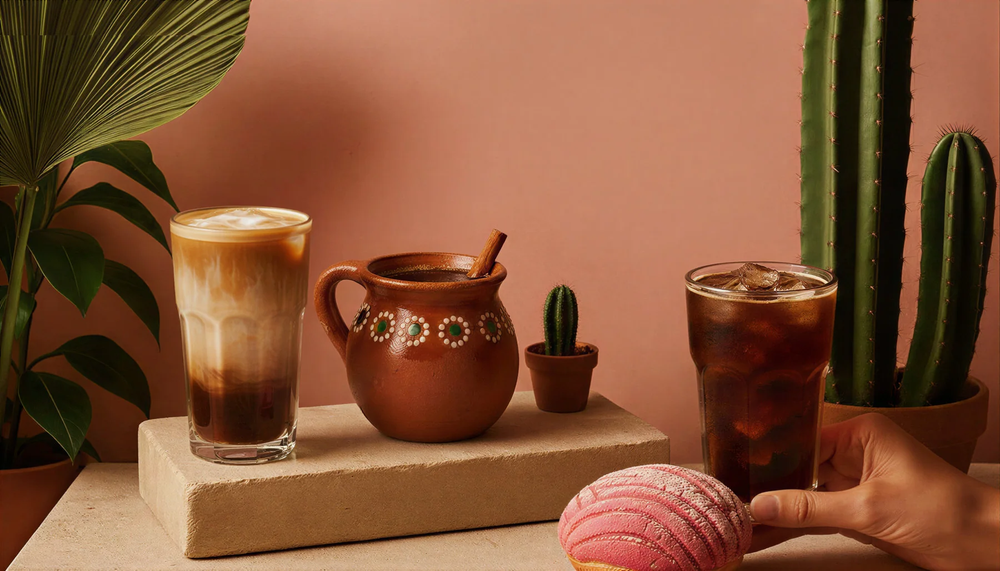
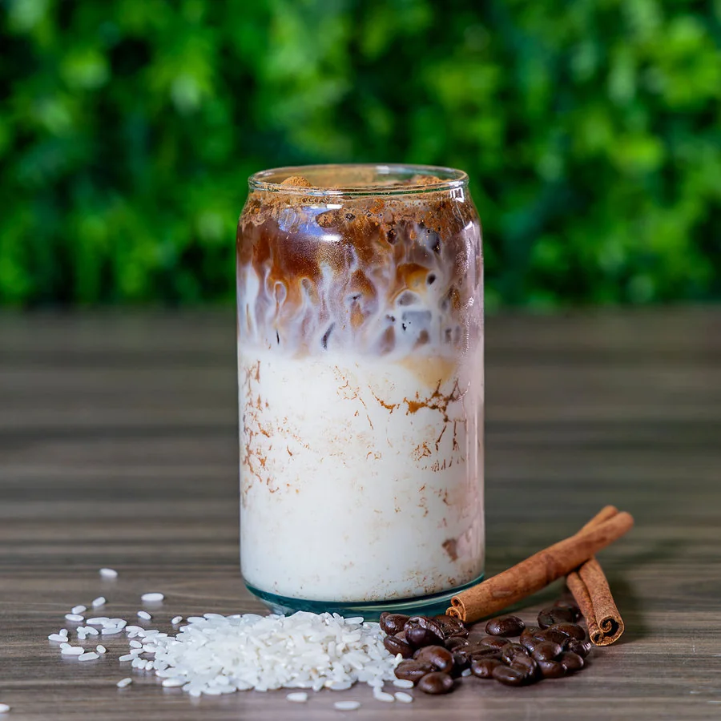
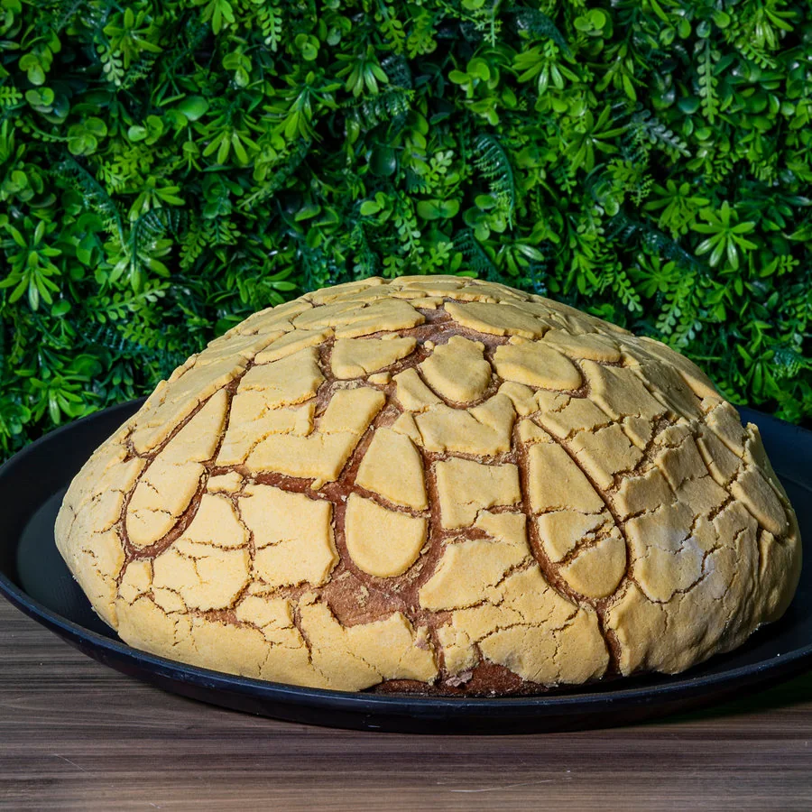
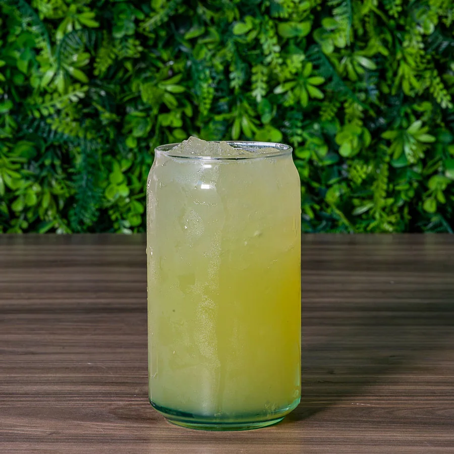
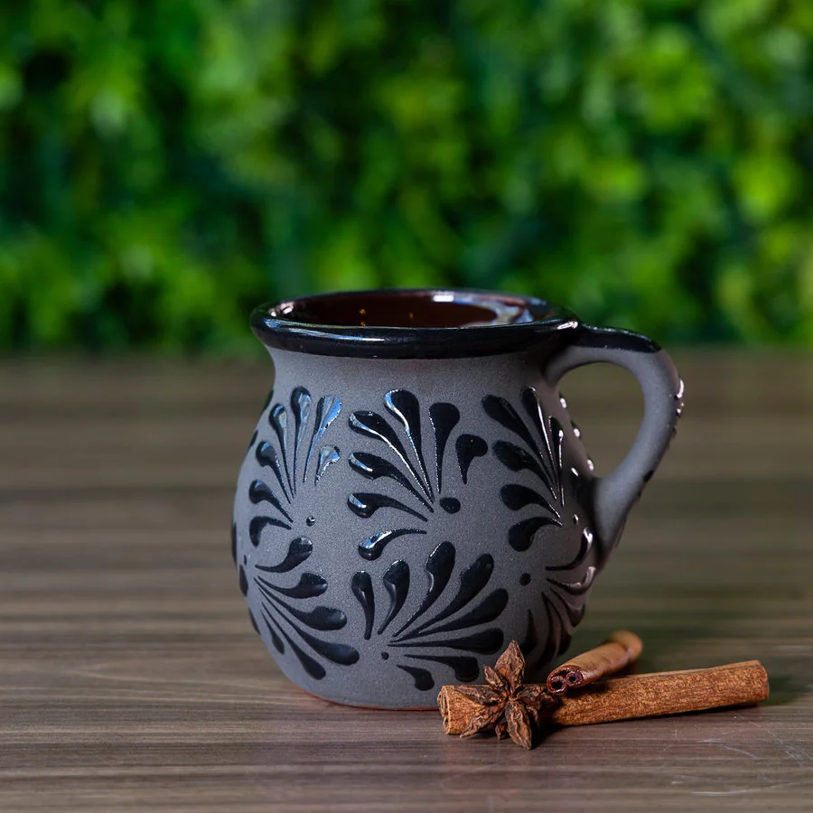

Un cafecito.
Y algo más.
Mexican coffee. Fresh jugos.
Pan dulce worth sharing.
mexicanaCAFÉ X · SACRAMENTOCoffee from Nayarit. A welcome for everyone.
Pull up a chair.
There’s a lot to love.
A cafecito that tastes like home. A concha that barely fits on the table. Something fresh, something sweet, and someone to share it with.
Welcome to Café X, your Mexican coffee & juice bar in downtown Sacramento.
Cafecitos

Cinnamon, espresso, happiness.
Pan Dulce

A little extra? Always.
Jugos

The mercado, freshly squeezed.
Energy

Turn up the fruit.
Big concha.
Bigger plans.
Meet the Concha Gigante. Tear it, share it, make a little mess. Some things are just too good to enjoy alone.
Meet the pan dulce
Mucho México.
In every cup.
Our founder’s story begins in Zacatecas. Our coffee’s begins in Nayarit. Both come together here, with the flavors and hospitality we grew up with.
The story behind your cup
México
Where our coffee
gets its start.
Made for
the juntada.
Good coffee has a way of bringing people together. Here’s a little of our world.
Meet our people


Buen café.
Wherever.
Your coffee, matcha, jugos, and energy favorites, freshly made and sealed to go. Grab one for the road, or a four-pack or six-pack for your people.
Order something good¿Nos vemos
en el café?
We saved you a spot on K Street.
Come for a cafecito.
630 K St #100Sacramento, CA 95814
Mon - Fri · 7am - 6pm
Sat - Sun · 7am - 8pm